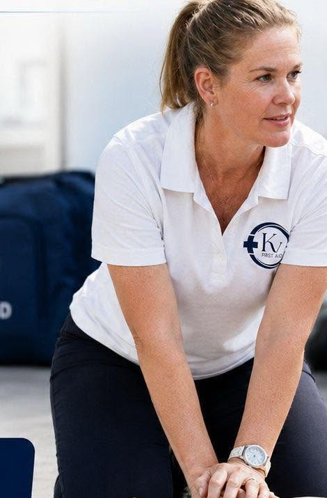
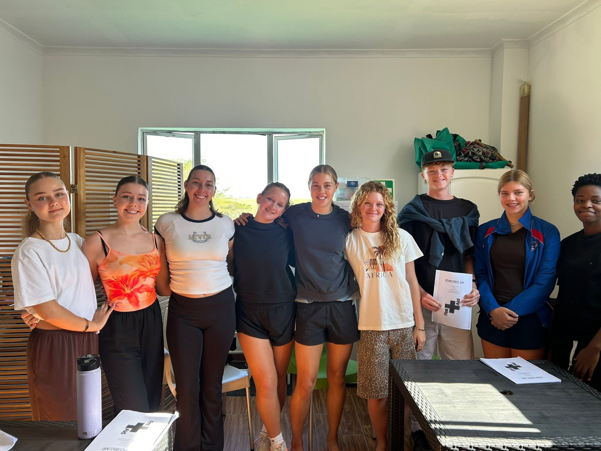

First aid training · Pietermaritzburg to Durban
Owner-run, hands-on first aid training based in Kloof. I come to your workplace, school or community group anywhere between Pietermaritzburg and Durban, or bring your team to the training room here.

about
Hi, I'm Kate, the owner of KV First Aid. I offer first aid courses because I believe everyone deserves the knowledge and confidence to act when it matters most.
I've been teaching first aid for over fifteen years, and I'm passionate about empowering people with practical skills that make a real difference. I bring the training directly to your workplace, school, community group or event, so your team learns together, in the space they'll actually be working in.
I'm based in Kloof and cover the whole corridor, from Pietermaritzburg through to Durban and every town in between. And if it's easier to come to me, there's a proper training room here on the premises.
Knowledge. Confidence. Care.
Real compressions, real recovery positions, real scenarios, not a slideshow. You practise until it feels automatic.
Onsite training anywhere from Pietermaritzburg to Durban, or bring your team to the training room in Kloof.
A restaurant kitchen, a preschool and a construction site face different risks. The course is shaped around yours.
our work
Courses run wherever the team is: a café courtyard in Hillcrest, a school hall, a boardroom, a farm, or the training room in Kloof. This group finished up earlier this year.

Photographs from KV First Aid's own channels. Fuller gallery to be supplied by the business.
courses
for organisations
First aid isn't optional for most South African employers. It sits in the Occupational Health and Safety Act, and it turns up in every risk assessment file, insurance review and safety audit. Training your own people is the simplest way to close it.
what the law asks of you
Under the General Safety Regulations of the Occupational Health and Safety Act (Act 85 of 1993), first aid provision scales with the size of your workforce.
Available and accessible at the workplace, with contents suited to the work being done.
At least one person holding a valid first aid certificate, readily available for every group of up to fifty employees at the workplace.
An expired certificate is the same as no certificate on an audit. Refresher training before the expiry date keeps the cover continuous.
General guidance, not legal advice. Your exact obligations depend on your headcount, your industry and your risk profile. Kate will walk you through what your workplace actually needs.
Group training onsite, in your own building, so nobody loses a day travelling and the whole shift is covered together.
Named, dated certificates issued on completion: the documents your risk assessment file, auditor or insurer will ask for.
First aid kits and refills supplied to match your workplace, so the box passes inspection and actually has what you need in it.
journal
Short, practical pieces on the things people most often ask about between courses: the skills worth keeping fresh.
What to check, what to shout, and why chest compressions start sooner than most people think.
Three different techniques for three different sizes of person, and how to tell which one you need.
The items that get used, the ones that expire quietly, and how often to check the whole thing.
book a course
Based in Kloof and covering the whole Pietermaritzburg–Durban corridor. If you're further afield, ask. It's usually still a yes.